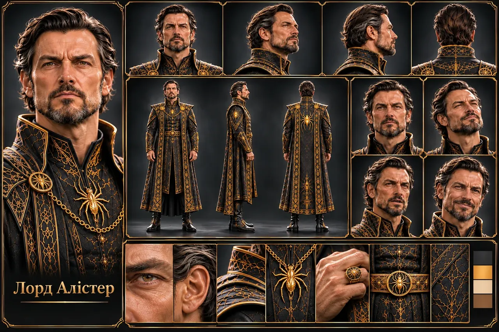

ОСНОВНА ІНФОРМАЦІЯ
Командувач бронегрупами
Лорд Алістер — один із командирів військ Верховного. Він керує бронетехнікою під час наступу на поселення та координує дії з лордом Темним. Його рішення безпосередньо залежать від обстановки на полі бою.
Титул: лорд
Роль: військовий командувач
Основний напрямок: бронегрупи та наземний наступ
Взаємодія: Верховний і лорд Темний
ДЕНЬ 17 · ПРОРИВ ПЕРИМЕТРА
Удар по обороні
Після послаблення оборонних систем Верховний наказує Алістеру й Темному вводити бронетехніку та діяти з різних напрямків. Алістер відповідає за південний і східний сектори. Він використовує заздалегідь визначені точки висадки й маршрути, не зводячи наступ до одного масованого удару.
ДЕНЬ 18 · ВІДХІД БРОНІ
Рішення під тиском обставин
Коли тилові бронегрупи зазнають втрат, частина машин виходить із ладу, а зв’язок із підрозділами ускладнюється, Алістер змінює завдання передових сил. Він наказує їм з’єднатися з підрозділами в поселеннях, не просуватися далі поодинці та діяти лише за підтримки сусідніх груп. Одночасно організовує точки збору, роздільне впорядкування справної й пошкодженої техніки та відновлення зв’язку.